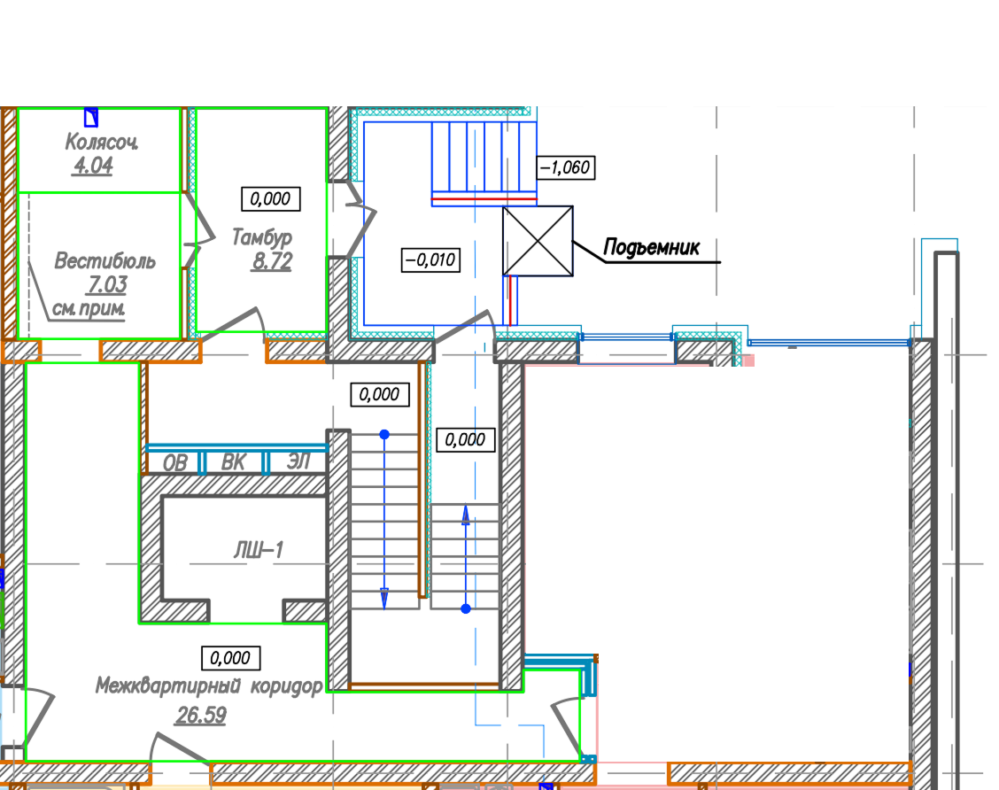

Утверждённый PNG сохранён без изменений. Основной PDF — страница 13; ЭП — страница 17. Из тамбура в вестибюль ведёт дверь. Колясочная открыта внутри вестибюля.

Общие вопросы для всех секций: возможный опуск потолка (Q5) и фактические обмеры при наличии (Q6). Полный список и правила готовности — в отчёте.